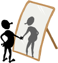

Lesson 1 of 7 - free your true Self to guide you

Increase Self Respect
and Self LoveBy Peter K. Gerlach, MSW
Member NSRC Experts Council
site intro > course outline > Lesson 1 study guide or links, site search, chat, or prior page > here
The Web address of this article is http://sfhelp.org/gwc/course
Updated 02-04-2015
Clicking underlined links here will open a new window. Other links will open an informational popup, so please turn off your browser's popup blocker or allow popups from this nonprofit Web site. If your playback device doesn't support Javascript, the popups may not display. Follow underlined links after finishing this article to avoid getting lost.
This 2-part YouTube video previews the ideas you'll find here:
Two priceless personal assets healthy people develop over time are self respect and non-egotistical self love. Many survivors of a low-nurturance childhood are burdened with psychological wounds, including excessive shame. They often have trouble loving and respecting themselves equally with other people. This article offers perspective and suggestions on how to understand and develop these two assets.
This article assumes you're familiar with...
Grown Wounded Children (GWC), and what it means to be a GWC
an overview of psychological-wound reduction ("recovery")
your human assets and rights as a unique, worthy person, and...
perspective on interpersonal respect
Perspective
We humans are judgmental critters. From our earliest years, we're taught to judge people as good or bad, right or wrong, nice or obnoxious, and so on. We gradually accumulate criteria for respecting (approving, admiring), people - including ourselves.
If we have wholistically-healthy, attentive early caregivers, we learn to appreciate our strengths and talents and accept our limitations without undue guilt and shame. If caregivers steadily love themselves and us in a healthy way, we may learn to like, respect, and love ourselves.
Because of the epidemic [wounds + unawareness] cycle, the more common outcome of early childhood is that preteens and teens often lack self-respect and self-confidence. They have inferiority complexes ("low self esteem") and related anxieties. Without intervention, that usually continues into adulthood and depletes health and relationships.
For such teens and adults, earning guilt-free self-respect and self love is a do-it-yourself challenge. This article and self-improvement course offer options toward mastering that vital challenge.
Think of someone you respect highly. Identify what it is about them - specifically - that causes your admiration and approval. Note the difference between liking someone and respecting them. Now think of someone you don't have much respect for. Why do you feel that way - specifically? With these criteria in mind, rate your current self-respect (low > medium > high) as..
a person
a female or male
a partner or friend
a neighbor
a daughter or son
a sibling or relative
a student and/or an employee
a citizen.
If you're nurturing minor kids, make each of the options below part of your parenting goals. Imagine what your life would be like if your early caregivers knew enough to do this for you.
Consider using these options as a checklist now and over time to discover your self-respect status and track your progress.
__ Option 1) Free your true Self to guide your other personality subselves in any situation. If your talented inner leader is disabled too often, your goal becomes “Empower my Self - not “Improve my self respect.” If you're skeptical about personality subselves, read this, and try this safe exercise. Then return here. As you reorganize your subselves, develop your awareness of the critical and discouraging "inner voices" (thoughts and images) from your Shamed Child, Inner Critic, Perfectionist, People-pleaser, Moralizer, Skeptic/Doubter, and some other subselves.
Stay aware that your tireless Guardian subselves are each trying to protect you. Then build your Self's ability to confront these subselves respectfully. Choose to think something like "Look, thoughts like that hurt me, so STOP! Instead, I need you to encourage me!" Experiment with that and notice the interesting inner debates that occur...
Your Self may still disrespect some of your actions and choices, but will do so with compassion, not scorn. S/He may not approve of the traits or views of some of your subselves, but will still accept them and believe in their overall worth and value.
__ Option 2) Identify your current life priorities, as judged by your recent actions and choices. One sure sign that your Self (capital "S") is guiding you is spontaneously ranking your wholistic health and growth among your top life priorities. This is foreign to most of us Grown Wounded Children (GWCs), and must be learned. Self-neglect is much more familiar.
__ Option 3) Develop your personal awareness It's essential for effective thinking and communicating, and for replacing shame and self-neglect with healthy self-respect and self love.
Paradox: you can't experience the priceless benefits of awareness until you practice it. Growing the habit of being aware in all situations empowers you to sense your current level of self respect and other vital things. That can empower you to improve it as needed if your Self is guiding you. On a scale of one to ten, how aware are you these days and nights? __ Option 4) Accept that you are responsible for your opinion of yourself. Then decide how important it is to earn and maintain your self respect each day and night. Many Grown Wounded Children are used to letting other people dictate their self-acceptance and self respect without any question.
__ Option 5) Think of the people you most admire and respect, and identify the specific traits that cause your approval. Then identify the specific core values that you want to live your life by - e.g. honesty, kindness, reliability, compassion, courage, diligence, and patience.
__ Option 6) Your integrity is living your life by your core values in all public and solitary situations ("Your integrity is doing what's right when no one's watching"). Develop your awareness of these values in confusing or scary situations, and notice how you feel if you live by or violate them. Honoring them increases self respect, and violating them promotes shame and guilt. Living by your core values is most likely if your true Self guides you.
This brief YouTube video adds perspective to honoring your integrity:
__ Option 7) Reflect and say out loud "The people who's opinion of me matters most now are... (who?)" If 'Me" doesn't head the list, review option #1 above. Overactive Shamed Child, Guilty Child, Dutiful Child, and People-Pleaser subselves will insist that other people's opinions are more important. Part of harmonizing these subselves is affectionately teaching them that that opinion is harmful.
Recall - we're reviewing practical options for improving your self-respect.
__ Option 8) Identify and validate your personal Bill of Rights. Stay aware of how calmly asserting your rights and limits without guilt nourishes your integrity and self respect. Typical kids raised in low nurturance environments learn to devalue or ignore their personal rights, and/or to assert them timidly with lots of anxiety and guilt. Does that describe you as a child (or now)? Is each young person in your life learning their personal rights and how to assert them effectively now?
Exercise - try slowly reading this sample Bill of Rights out loud when you're not distracted. Notice your "inner voices" (thought streams) as you do, and try to identify which subselves are "speaking." If you hear "Yes, but..." or similar with some Rights, you'll need to persuade each subself to change their attitudes for their common good.
Check each subself to see if it's living in some past time, and use parts work to invite any you find to live with all your parts in the present. That can help them release self-limiting expectations.
__ Option 9) Review (a) your expectations (shoulds, musts, have-to's, ought-to's and cannots) of yourself, and (b) patiently identify where you got each of them - a parent, hero/ine, teacher, church, or someone else. Your expectations should come from YOU!
Typical unaware GWCs bring the expectations of some childhood grownups into adulthood. Until some trauma occurs, we seldom question and update our largely-unconscious old expectations of ourselves. This promotes automatic self-criticism, guilts, and more shame. Use these ageless guidelines for daily inspiration.
__ Option 10) When your Self (capital "S") guides you, identify your specific criteria for awarding self respect, and commit to achieving more of them more often. Meditate and/or journal to identify the standards your subselves use to decide whether your values, thoughts, and actions merit self-approval. Examples:
"I respect myself when I have the courage to overcome my doubts and fears, and risk painful failure, conflict, and rejection by confronting some scary person or challenge."
“I feel really good about myself when I consistently fulfill my responsibilities to others and myself thoroughly, honestly, to the best of my abilities.”
"I respect myself when I know my limits, rights, and boundaries, assert them clearly, and can say 'No' without major shame, guilt, or anxiety."
“I appreciate the way I creatively balance work, play, and rest most days, and take consistent care of my health and security in effective ways.”
"I'm pleased with myself when I use my talents to benefit other people, without getting egotistical, self-neglectful, or codependent."
"I admire myself when IS can defer short term pleasure for long-term satisfaction."
"I like being Me most when I act on my beliefs and values (my integrity) even if it upsets other people and risks their disapproval and rejection."
"I respect myself when I admit my mistakes promptly, apologize to others if I've hurt them, and try to learn from my errors."
"I like that I'm usually genuine with other people - I don't have to pretend to be someone I'm not."
Once you identify your respect criteria, you're more likely to be aware of them and choose them. Can you imagine being your own best cheerleader without feeling weird, guilty, or anxious?
As your do this, expect "resistance" from your Perfectionist, Critic, Pessimist, and Worrier subselves. They need to grow trust that your Self, other Managers, and your Higher Power will keep your Inner Kids safe and healthy.
__ Option 11) Examine your attitude about pride (self-acceptance and approval). If you were taught “Pride is a sin,” or "Pride means you have a swelled head," rethink whether those opinions help you now. Non-egotistical pride is healthy and nutritious!
Non-egotistical pride is feeling the same appreciation and admiration for yourself and your achievements that you do for other people. Do you agree? Would your childhood caregivers agree? Option: negotiate an “attitude adjustment” with your Inner Critic and Perfectionist about this belief. __ Option 12) Stay clear on the difference between being Self-ish (attending your own needs and welfare while staying aware of others’ equal needs) and selfish – seeking your own comfort without caring about other peoples’ needs or feelings. Being intentionally Self-ish without guilt promote serenity and wholistic health!
__ Option 13) Teach your subselves to balance short-term gratification and long-term satisfactions. Put a reminder of this balance where you can see it until it becomes a habit. If Inner Kids and their Guardian subselves control your personality, they’ll usually opt for short-term comfort. That promotes guilt, shame, future remorse, - and self disrespect.
More options toward raising your self-respect...
__ Option 14) Evaluate your recent decisions and behaviors each day or week. Give yourself an empathic self respect report card in normal and special situations. This will get easier as you work to adjust and synchronize the inner-family roles of your Inner Critic, Perfectionist, Idealist/Optimist, Catastrophizer, and Cynic/Doubter. Note the difference between affirmation (“I appreciate things about myself non-egotistically”) and bragging (“I’m better than other people because…”).
__ Option 15) Intentionally choose an attitude like “Mistakes and failures do not define my worth. They usually are my best decision and effort at the time. They're valuable chances for me to learn about myself in the world.” If some subselves oppose this, ask what they’re afraid of, and proactively work to trust your Managers and reduce their fears. __ Option 16) In confusing or scary situations, authorize yourself to stop the action without guilt, and clarify "What do I need in this situation to earn my own respect?" Variation: clarify your definition of “personal integrity'' (can you define that now?) Then in dilemmas, ask “Which option fits my integrity best?” Repeat this over time, and enjoy having it become a habit.
__ Option 17) Distinguish between guilt (I do bad things) and shame (I am a bad thing). They’re healed differently. Evolve a conscious strategy to avoid and heal guilts and shame, and coach yourself to use it every day. This is a key part of reducing psychological wounds (Lesson 1), and requires your Self to steadily lead your other personality subselves.
__ Option 18) Read and apply books like...
Nathaniel Branden’s “The Six Pillars of Self Esteem;”
John Bradshaw’s “Healing the Shame That Binds You;” and...
Hal and Sidra Stone’s “Embracing Your Inner Critic.” There are many others.
__ Option 19) Identify recurring memories that tend to renew your guilt and shame over past behaviors and decisions. (“Every time I think of having the affair I feel awful!”) Use "parts work" or equivalent to forgive yourself for these, and let them go. If useful and safe enough, apologize to people whom you feel were hurt by your behaviors. Do this to free yourself, not to make them feel better.
__ Option 20) Stay alert for situations and relationships that promote shame and guilt, and avoid them without guilt, shame, or anxiety. This is self nurturance, not cowardice! In such situations...
keep your true Self in charge,
assert firm limits with your Inner Critic, Idealist, and Perfectionist; and...
connect your Shamed Child subself with your Nurturer (Loving Parent subself) .
__ Option 21) If you care for children, reflect on what you're teaching them about respecting themselves, and how you're teaching them. Are you guiding them to moderate their self-criticism and perfectionism, and to praise and appreciate themselves when merited without false humility? Are they able to receive compliments gracefully without self-discounts ("Aw, anyone coulda done that.")
__ Option 22) As you gradually reduce your psychological wounds and gain genuine self respect, affectionately teach your energetic Perfectionist, Critic, Achiever, and Impatient subselves to adopt a motto like "Progress, not Perfection."
__ Option 23) Clarify what "love" means to you, and meditate on how self-respect and self-love relate to each other. Give your subselves steady encouragement to love themselves as much as they do other special people in your life.
+ + +
Use these 23 self-respect options as guides and awareness-sparkers, not absolutes. Sense their theme, and trust your creativity! Pause, breathe, and reflect. Do each of these self-respect options make sense to you? Do they seem do-able? Does it seem credible that intentional, patient progress on each of them will make the others easier? Practicing options like these promotes effective wound-reduction and more satisfying relationships.
Building and maintaining your self respect and integrity is probably the second most impactful goal you can work toward to maintain serenity, wholistic health, and a high-nurturance family. The first goal is freeing your Self to guide your other personality subselves. How much priority have your ruling subselves given these targets recently? Now let's build on these options explore another priceless treasure...
Do you love yourself now? Whether yes or no, can you say why? A paradox is - unless you have experienced genuine self love (vs. egotism or Narcissism), you can't know how to answer that vital question.
This YouTube video clip provides perspective and an exercise to help you answer this question :
For perspective, egotism is believing you're superior to other people and your needs and opinions are more important than theirs. Narcissism is being so focused on your own wonderfulness that you cannot see or appreciate the equal worth of other people, despite their differences. Self love appreciates and respects you and all other people equally.
Reflect, and name five people or whom you have felt what you call love. How would you define the difference between liking or needing someone and loving them? Often these distinctions blur. Loving yourself starts with being clear on your identity, and liking and respecting who you see yourself to be.
As you know, there are different kinds of love, like the colors in a spectrum of light: There is marital love, parent-child love, platonic love between friends or relatives, love of a Higher Power, a country, an animal, a favorite place, object, experience, or music.
A common element in all types of interpersonal love is significant pleasure in being with a special child or adult. Another common element is the existence of a deep, stable, emotional bond between the lover and the beloved. A bond is a constant caring and appreciation undiluted by time, distance, or lack of contact. And genuine love between people cannot occur without mutual respect and trust. Do you agree?
Also reflect on the difference between spontaneous (genuine) love and dutiful (guilt-based) love - i.e. we're supposed to love mommy, daddy, grandma or grandpa, sister, brother, etc." We may say "I love you" to these people because not doing so is shameful and "bad," and suggests something is wrong with us. Similarly, some people confuse needing someone with loving them. Do you know anyone like that?
Another reality is that sometimes we can love / like / enjoy / appreciate some attribute of a person - e.g. their sense of humor, compassion, playfulness, courage, responsibility, cheerfulness, listening, etc - and not love the whole person. Have you ever felt that?
Is it your experience that - like respect and trust - genuine love for a person must be earned over time? If so, do you have to do something to earn self love?
As an infant, you learned well before coherent thoughts and speech whether you felt loved (lovable) and whether you had to do something to get that delicious “good-Me” feeling (conditional love). You were a blank slate, and grew a “good Me / bad Me” sense from your perceptions of your caregiver’s facial expressions, sounds, touches, and actions.
Your first experience was “My love-feeling comes from outside me – from another person.” Your responses reflected need and/or pleasure, not love (yet). Growing “mature” includes rebalancing your initial love-dependence on external sources with self-love: accepting + respecting + liking + trusting + enjoying + cherishing yourself without anxiety, guilt, or shame. This is hard, specially if your caregivers didn’t genuinely love themselves and steadily encourage you to do the same. We start life feeling stupid, clumsy, needy, confused, weak, and inept, compared to caregivers and older children (remember?). Their behavior around us, over time, forges an unconscious early feeling between “I am good / lovable / worthy” and “I am bad / disgusting / worthless.”
Your early decision about being lovable or not was self-centered and purely subjective. You couldn’t discern and compensate for your caregiver/s feeling...
unlovable themselves (shamed),
over-distracted by other things,
inept at knowing and filling your immediate and long-term developmental needs,
Do you love yourself now?
Focus for a moment on the adult in your life for whom you have felt the strongest non-erotic love. If you can't think of such a person, try identifying someone that you really like and/or respect. Concentrate on the feelings you have or had for this marvelous person. Consider how you came to feel that way about them.
Can you consciously identify what it is about this special adult that merits this unique feeling? Now look in the nearest mirror. Do you feel the same emotions for the person you see? Were you consistently encouraged to like, respect, and love yourself without guilt, shame, or ambivalence, as a child? How has that affected your life and relationships?
A vital step toward learning to love yourself is growing aware of, and an affection and admiration for, your amazing inner family of personality subselves. They are marvelously diverse, loyal, talented, and dedicated to your survival. Have you met your inner crew yet? If so, do you love them for who they are and what they bring you? # Reality Check - on a scale of 1 (I feel no guilt-free love for myself) to 10 (I'm able to love myself as much as I love other special people in my life), how would you rate your current self-love? ___
You cannot make yourself (or anyone else) love you. You can learn to be aware of yourself, accept your unique mix of traits and limitations, like whom you see, and learn to respect the unique, worthy person wearing your skin (above). Do you agree? If not, what do you believe?
This article explores two vital aspects of wholistic health and psychological-wound reduction: self-respect and self-love. Each of these can be hard to achieve for typical wounded members of low-nurturance families. The article proposes 23 practical options that any motivated, aware person can use to improve their self respect. .
The second part of the article offers perspective on love and loving yourself. The keystone for both these treasures is freeing your true Self to guide your other subselves (personality) in all situations.
One result of genuine self-respect and self love is self confidence in important roles and situations in your life. Another result is acknowledging your rights as a worthy person, which allows effective assertion and problem-solving.
A useful resource for Grown Wounded Children is the book How to Love Yourself When You Don’t Know How - Healing All Your Inner Children, by Jacqui Bishop, M.S., and Mary Grunte, R.N. There are many similar resources available now - search your favorite online bookseller for "self love" - but don't expect them to acknowledge personality subselves.
Pause, breathe, and reflect - why did you read this article? Did you get what you needed? If not, what do you need? Who's answering these questions - your true Self, or ''someone else''?
his article was very helpful somewhat helpful not helpful
site intro / course outline / site search / definitions / chat / contact